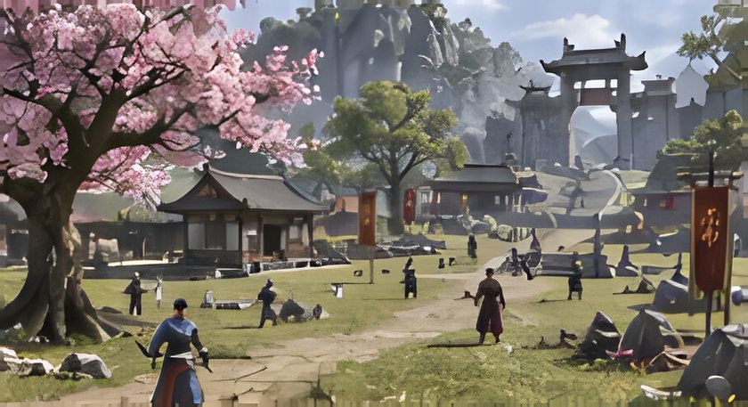
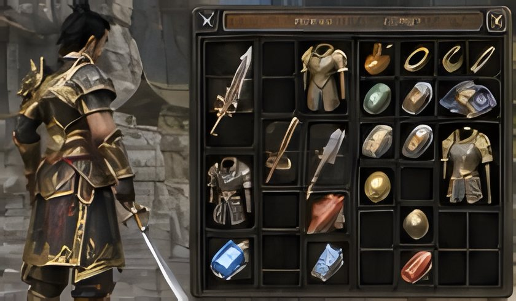
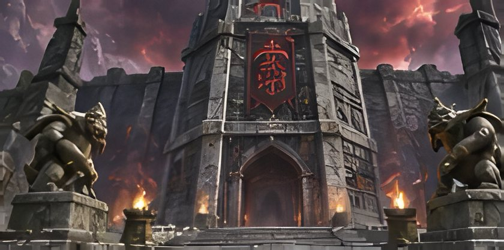
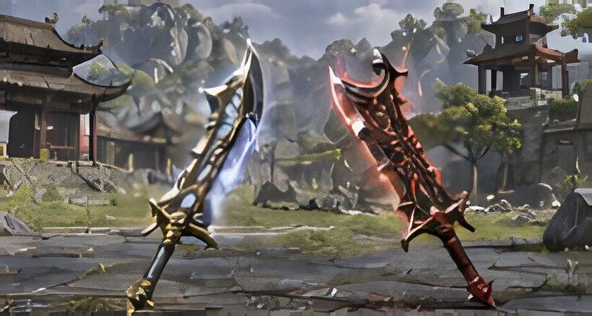

Son rehberler
Oyunu daha iyi tanı. Her adımda güçlen.

RehberSeviye kasma
1–75 seviye kasılma rotası
Hangi haritada, hangi seviyelerde kasılmalı? 1'den 75'e kadar en verimli seviye kasma rotası.
8 dk okuma

İpuçlarıEşya & Efsun
Efsun seçerken nelere dikkat etmeli?
Silah, zırh ve aksesuarlarında doğru efsunları seçerek performansını nasıl artırırsın?
7 dk okuma

RehberZindanlar
Şeytan Kulesi: kat kat ilerleme rehberi
Şeytan Kulesi'nde kaçıncı katta ne çıkar, hangi ekipmanla girmeli ve katları en verimli nasıl geçmelisin?
10 dk okuma

HaberEşyalar
Dolunay Kılıcı mı, Kırmızı Demir Pala mı?
İki popüler silahın artıları, eksileri ve hangi karakterler için daha uygun olduğunu karşılaştırdık.
6 dk okuma
Reklam alanı 728x90